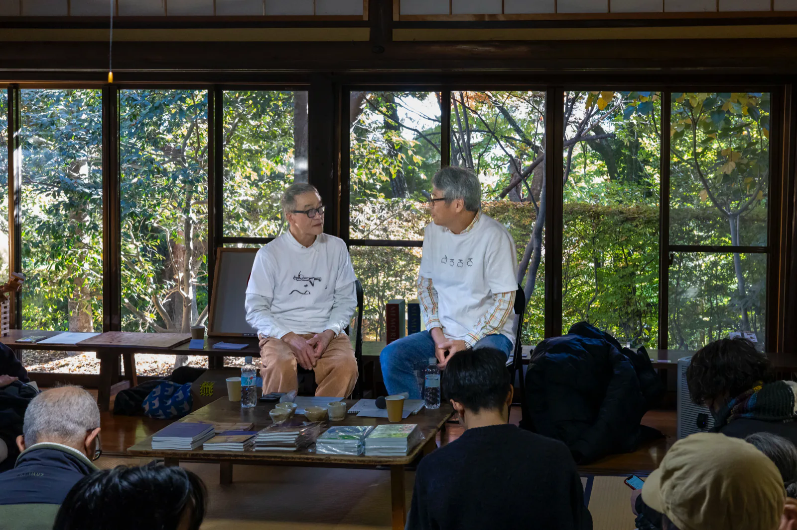

Art Obulist 2025 ワタナベエイジ展
W Eiji
二人のワタナベエイジ。並行する二つの時間が、2024年12月に交わる。

- 1961愛知県に生まれる
- 1962大阪市の下町に生まれる
- 1989初個展（ステゴザウルス スタジオ、名古屋。〜1993）最初の論文（Neuroscience）
- 2010あいちトリエンナーレ2010。星画廊を開く（〜2016）錯視研究の最初の論文（北岡明佳と、Vision Research）
- 2015頃「芸術植物園」愛知県美術館英司が「eijiwatanabe」の画像検索で、同姓同名の研究者と錯視画像を見つける
- 2020「Merman / おとこの人魚」錯視作品「Morning Monster」（Lana Sinapayen と）
- 2024「Morning Star（明けの明星）」秋、オカザえもんの芸術祭で英司が小松英彦に出会う。12月、岡崎の基礎生物学研究所で初対面
-
2025

⑥《エデンの海》 休憩棟 休憩棟に作品 24 点

《変身立体（星丸）》 管理棟発明：杉原厚吉 管理棟に展示 16 項目と質問箱
Art Obulist 2025 ワタナベエイジ展「Morning Monsters / W Eiji」
11月1日（土）–12月7日（日） 大倉公園 管理棟、休憩棟、中庭など（愛知県大府市）。公園の道が二つの棟を結んだ。
-
2026
3.28 counter lecture vol.02「Analyze W Eiji」（Jingu339）
3.31 カタログ発行
7.17 対談「ふたりは策士」の動画を公開
8.20 愛知教育大学の夏期集中講義に二人で登壇